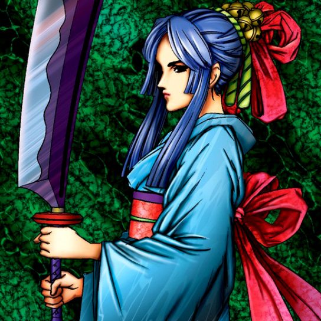

Beautiful Headhuntress

STATS
ATK: 1600
DEF: 800DECK COST
Deck Cost per Card: 24Fusion List (8 Possible Fusions)
- Beautiful Headhuntress + Ancient Jar = Mystical Sand
- Beautiful Headhuntress + Battle Ox = Empress Judge
- Beautiful Headhuntress + Dancing Elf = Dark Elf
- Beautiful Headhuntress + Firegrass = Queen of Autumn Leaves
- Beautiful Headhuntress + Fire Eye = Flame Swordsman
- Beautiful Headhuntress + Key Mace = Dark Witch
- Beautiful Headhuntress + Koumori Dragon = Sword Arm of Dragon
- Beautiful Headhuntress + Rude Kaiser = Nekogal #2